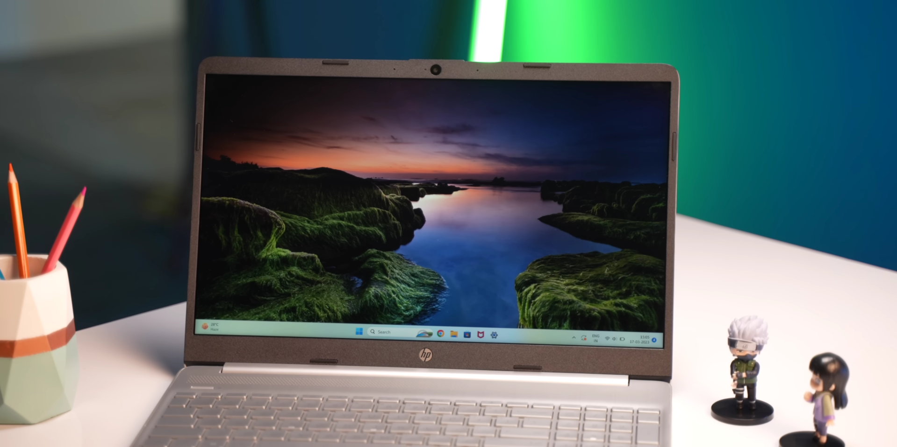
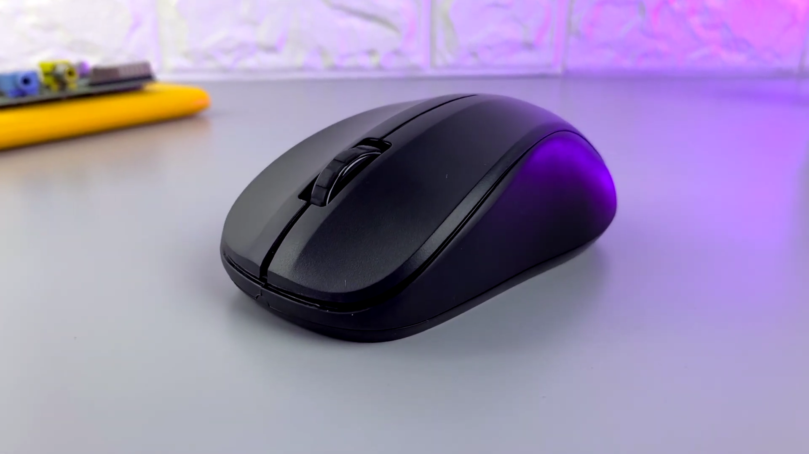
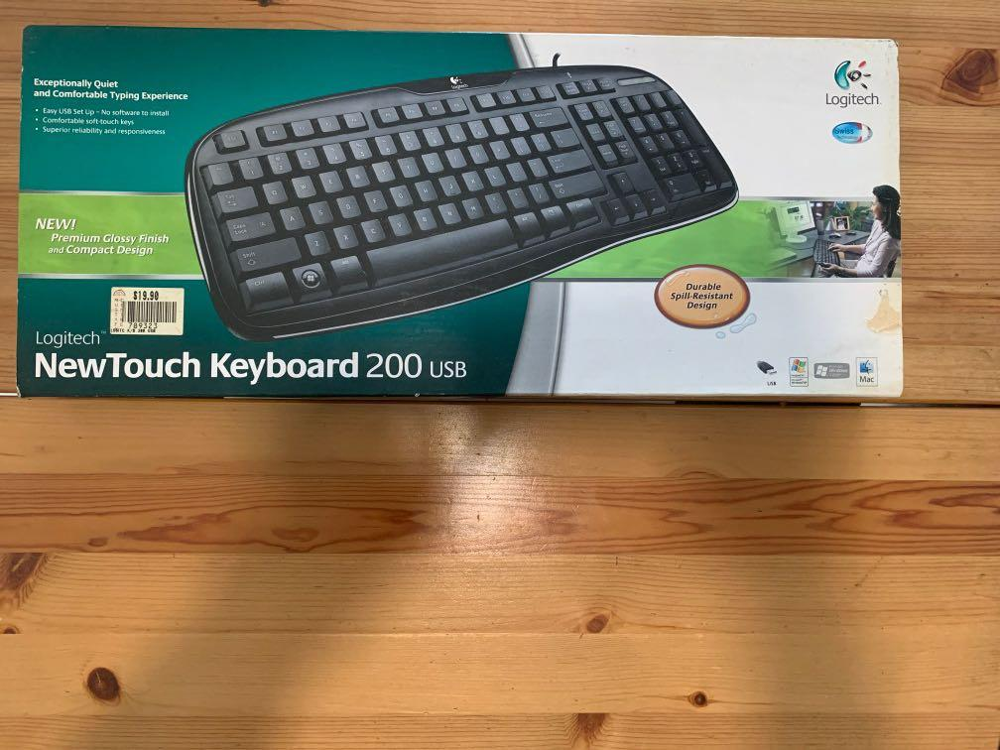
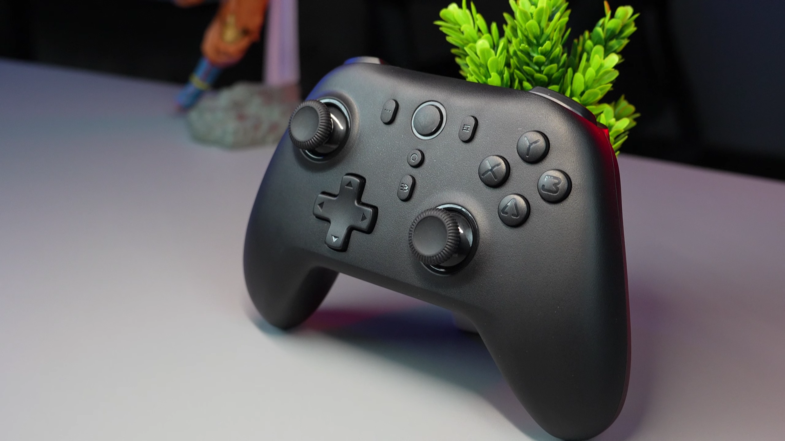
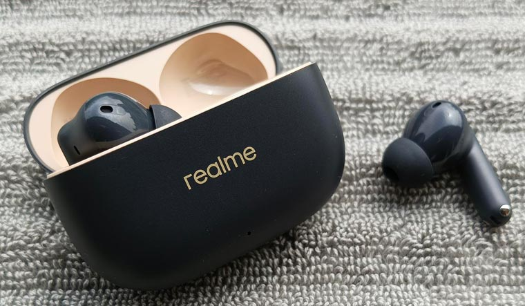

This has been my main laptop for a long time and pretty much the machine where most of my gaming journey started. The HP 15s with the Ryzen 3 3250U has handled everything I throw at it — gaming, browsing, coding, and general everyday use. It’s not a high-end gaming laptop, but it has been reliable enough for me to play a lot of games and experiment with different setups.
I’ve used this laptop a lot over the years, probably more than it was meant to handle. After so much continuous use, the battery is basically exhausted at this point. It lasts around 20 minutes at best, so it almost always has to stay plugged in to work properly. Even though the battery is pretty much fried now, the laptop is still running and continues to be the core of my setup.
This is the HP S500, just a simple standard mouse that I’ve been using with my setup. It’s nothing fancy or gaming-focused, but it gets the job done without any problems. For my regular use and gaming sessions, it works perfectly fine and feels comfortable enough for long hours.
There’s honestly not much to say about it because it’s just a regular, reliable mouse. It responds well, does what it’s supposed to do, and has been part of my setup for quite some time without giving me any issues. Sometimes simple things just work, and this mouse is one of them.


This keyboard is honestly a bit of a relic. I found it lying in an old storage room at home, and it’s probably almost as old as I am. It had clearly not been used for many years, but I decided to plug it in and see if it still worked — and surprisingly, it did.
Since it’s been sitting unused for so long, the keys are a little hard to press and not as smooth as modern keyboards. Because of that, I don’t use it all the time. Most of the time I just stick with my laptop’s built-in keyboard. I only pull this one out when I want to sit back a bit and use my PC more like a desktop setup. Even though it’s old and a bit stiff, it still gets the job done when I need it.
This is the latest addition to my setup — the Cosmic Byte Blitz controller. I got it mainly to make gaming more relaxed compared to using a keyboard and mouse all the time. After using it for a while, it has quickly become one of my favorite gadgets in my setup.
One thing I really like about this controller is the Hall Effect joysticks, which means no stick drift issues over time. The vibrations also feel really good while playing and make the gameplay more immersive. It just gives a nice vibe when sitting back and playing games comfortably. Overall, it’s been a great upgrade to my collection and makes casual gaming much more enjoyable.


These are the realme Buds T300, and they’ve been my go-to earbuds for both gaming and everyday listening. They’re really easy to use and connect quickly, so I can just pop them in and start playing or listening to music without any hassle.
The sound quality is pretty good, and I especially like the bass, which makes games and music feel more lively. They’re also comfortable to wear for long periods thanks to the ergonomic design. I use them not just for gaming but also for casual listening when I’m watching videos or relaxing. Another nice thing is the ENC, which helps reduce unwanted outdoor noise so I can focus more on what I’m hearing.